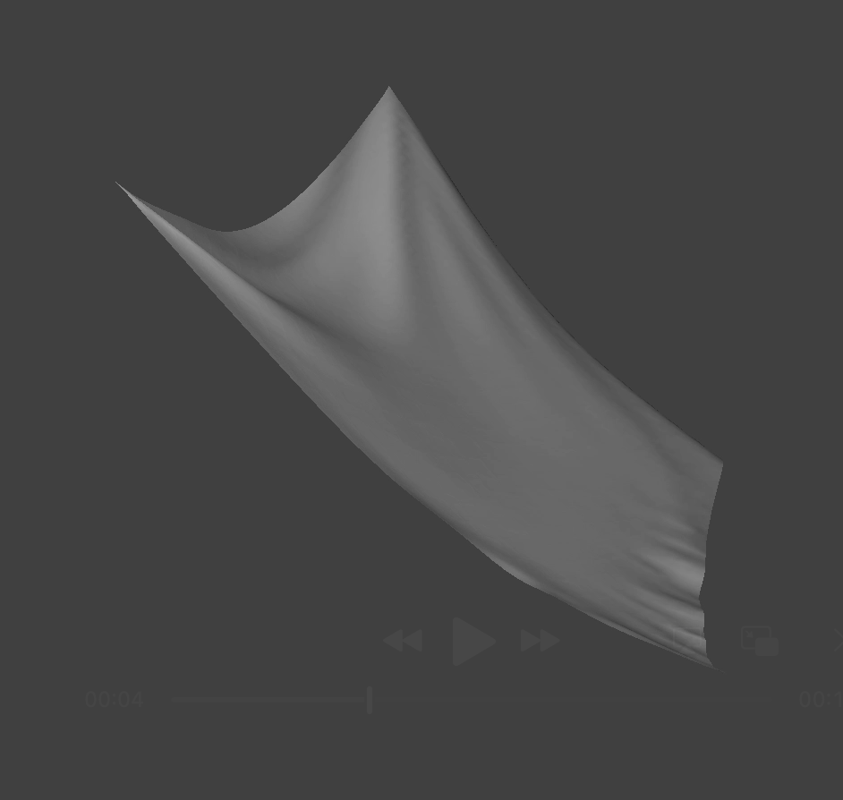
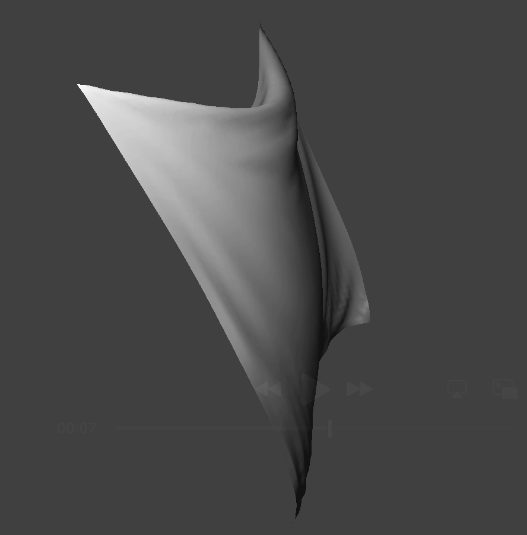
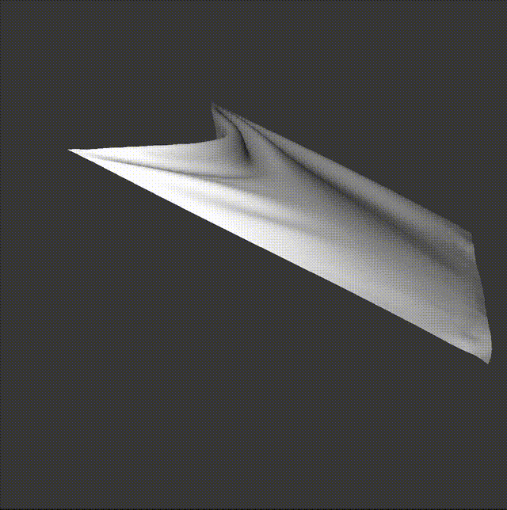

CS184/284A Spring 2025 Homework 4 Write-Up
Overview
In this assignment I built a cloth simulation using a mass-spring system. The cloth is defined as a grid of point masses connected by three types of springs: structural, shearing, and bending, which each enforce a different physical constraint. The simulation has timesteps, accumulating gravity, and constraints to prevent springs from over-stretching.
Beyond the main simulation, I added collision handling with sphere and other plane primitives, as well as self-collision detection using spatial hashing to avoid brute force checks. Lastly, I implemented a group of shaders: diffuse, Blinn-Phong, texture mapping, bump mapping, displacement mapping, and environment-mapped reflections. As extra credit I also implemented a varying wind force.
The most surprising thing I learned was how much physical realism you can get from Verlet integration. I was surprised how a few lines came out with some convincing cloth behavior.
Part 1: Masses and Springs
I implemented Cloth::buildGrid to generate a grid of num_width_points × num_height_points point masses stored in a row major order. For a horizontal cloth the masses are placed at y=1 varying over the XZ plane, and for a vertical cloth we vary masses over the XY plane with a small z offset between -1/1000 and 1/1000 so we break symmetry that would prevent the cloth from falling naturally.
After placing all the masses, I generate three spring types. Structural springs connect each mass to the one to its left and the one above so the basic grid is formed. Shearing springs connect diagonally to the top left and top right to stop diagonal deformation. Bending springs connect each mass to the one two to its left and two above so it doesn't bend out of the plane. I only add springs after all masses are placed to I avoid pointer invalidation from vector reallocation, the 2D is mapped to 1D with row * num_width_points + col.


Part 2: Simulation via Numerical Integration
Each simulation timestep proceeds in three stages. First, I reset the forces and accumulate external forces like gravity applied uniformly to every point, and then I accumulate spring correction forces using Hooke's law: $$F_s = k_s \cdot (||p_a - p_b|| - l)$$ along the unit vector from one mass to the other. For bending springs we need to use $0.2 \times k_s$ so they are weaker than structural and shearing springs.
Second, I apply Verlet integration to update each unpinned mass position: $$x_{t+dt} = x_t + (1-d)(x_t - x_{t-dt}) + a_t \cdot dt^2$$ where d is the damping percentage divided by 100. The term $(x_t - x_{t-dt})$ encodes velocity so it doesn't need to be stored.
Third, I apply the Provot constraint so for any spring stretched beyond 110% of its rest length, I correct the positions of both endpoints and split the correction evenly, or I apply it fully to whichever end is unpinned.
Effect of Spring Constant (ks)
At low $k_s$ (500 N/m) the springs are weak so the cloth droops between the two pinned corners forming a pronounced U-shape with some rippling before settling. At high $k_s$ (50000 N/m) the springs are stiff so the cloth barely droops and hangs almost flat without much oscillation.


Effect of Density
Density controls the mass of each point. At low density (5 g/cm²) the cloth is light so it floats down gently and hangs with minimal sag. At high density (100 g/cm²) the cloth is heavy so it sags with gravity and the edges hang much lower.


Effect of Damping
Damping scales the velocity term so it simulates energy loss. At zero damping the cloth swings and oscillates for a long time, taking longer to rest. At high damping the cloth falls very slowly and settles almost immediately without any oscillation. This behavior can be seen in the gifs below.


Pinned4 Final Resting State

Part 3: Handling Collisions with Other Objects
Sphere Collisions
Sphere Collisions: For each point mass I check if its distance from the sphere origin is less than the sphere radius. If it intersects, I find the tangent point by normalizing the direction vector and scaling to the radius, and then I compute a correction vector from last_position to the tangent point. This is then scaled by (1 - friction) and applied so it preserves tangential velocity while pushing the mass back to the surface.
Plane Collisions
Plane Collisions: Plane collisions are detected by checking whether the dot products of last_position and position have opposite signs to the plane normal. If they cross, we need to find the crossing point using a ray-plane intersection, offset it by the surface offset above the plane on the original side, and apply the correction from last_position scaled by (1 - friction) like in the sphere.
Sphere ks Comparison


At low $k_s$ the cloth overly wraps tightly over the sphere so it produces folds where excess fabric pools at the bottom. At high $k_s$ the springs resist deformation so that the cloth sits on top of the sphere almost like a rigid sheet.
Plane Rest State

Part 4: Handling Self-Collisions
Basic self-collision checks all pairs so it results in $O(n^2)$ intersection complexity which is too slow for real-time simulation. Instead I implemented spatial hashing, so each timestep I partition 3D space into boxes of dimensions $w \times h \times t$ and bucket each point mass into its cell using a hash function. Self-collision for a given mass only checks the other masses in the same bucket so traversals are quicker.
For each pair closer than $2 \cdot \text{thickness}$ apart, I compute a repulsive vector pushing the mass away, and I average all pairwise corrections and scale by `1/simulation_steps` so it's more stable. I map each 3D cell origin to a float key via a polynomial combination of coordinates with large prime constants to minimize collisions.
Cloth Falling on Itself


Effect of Density and ks on Self-Collision
At low density the cloth is light so it produces large folds spread over a large area. At high density the cloth is heavy so it compresses into tighter folds. At low $k_s$ the cloth is locally active so it crumples into many small chaotic folds, but at high $k_s$ it doesn't want to bend and produces fewer, stiffer folds.


Part 5: Shaders
Shader Programs
A shader is a program that runs on the GPU independently across thousands of vertices or fragments. We evaluate lighting for every vertex and pixel at once so real-time rendering becomes possible instead of tracing rays on CPU.
Vertex shaders run once per vertex, and they transform positions from model space to clip space and compute vertex quantities like position, normal, tangent, and UV coordinates so they can be interpolated by the fragment shader.
Fragment shaders run once per fragment after rasterization, and they receive interpolated values across the triangle from barycentric coordinates and output a final color. The vertex shader handles geometry, and the fragment shader handles appearance.
Blinn-Phong Shading Model
Blinn-Phong models lighting as three components.
Ambient: $k_a I_a$ provides a constant brightness so nothing goes completely black.
Diffuse: $k_d (I/r^2) \max(0, \mathbf{n} \cdot \mathbf{l})$ gives matte shading proportional to how directly the surface faces the light.
Specular: $k_s (I/r^2) \max(0, \mathbf{n} \cdot \mathbf{h})^p$ produces a sharp highlight using a half vector $\mathbf{h} = \text{normalize}(\mathbf{l} + \mathbf{v})$ so we get specular reflections. The exponent $p$ controls how sharp highlights are.


Texture Mapping
The texture shader samples u_texture_1 at the fragment's interpolated UV coordinate using the GLSL built-in texture(sampler2D, vec2) and outputs the sampled color directly. I replaced the default texture with an image of a little cat.

Bump and Displacement Mapping
Both use a height map to add surface details. In bump mapping, I compute differences of the height field to get normal perturbations $dU$ and $dV$, construct the local normal $n_o = (-dU, -dV, 1)$, and transform it to world space using the TBN matrix. This perturbed normal is used with Blinn-Phong shading so we get the illusion of bumps without changing geometry.
In displacement mapping the vertex shader moves each vertex along its normal using $p' = p + n \cdot h(u,v) \cdot k_h$ so it creates actual geometric displacement. The fragment shader is identical to bump mapping.


The main difference is bump mapping looks identical at both resolutions because it is a shading trick where the geometry never changes, but displacement mapping is resolution dependent. At coarse resolution there are fewer vertices to represent the height map so you get large jagged spikes in the silhouette, while at fine resolution the dense vertex grid allows the displacement to be expressed with more fidelity.
Mirror Shader
The mirror shader computes the outgoing eye ray from camera to fragment, reflects it across the surface normal using the built in reflect(), and then samples the environment cubemap along the reflected direction so it approximates a reflective surface without actually reflecting a ray.


Part 6: Extra Credit — Wind Simulation
I implemented a varying wind force in Cloth::simulate. I accumulate $dt$ each step into a `wind_time` counter, driving a wind strength that oscillates using layered sin waves at offset frequencies:
$$wind\_strength = 0.8 + 0.5 \cdot \sin(t \cdot 3.0) + 0.3 \cdot \sin(t \cdot 7.3) + 0.2 \cdot \sin(t \cdot 13.7)$$
Because 3.0, 7.3, and 13.7 aren't ever equal relative to each other the combined pattern never repeats. The baseline of 0.8 with amplitude of about one means the force goes to about zero at troughs and peaks around 1.8 at gusts. I also added a spatial variation term to change the points based on their position so it creates wave effect on the cloth.
$$spatial = \sin(x \cdot 2.0 + t) \cdot \cos(z \cdot 1.5 + t \cdot 0.5)$$
If I added a constant force it would eventually hit equilibrium, so the oscillating strength means the cloth is continuously driven between states and never settles.


